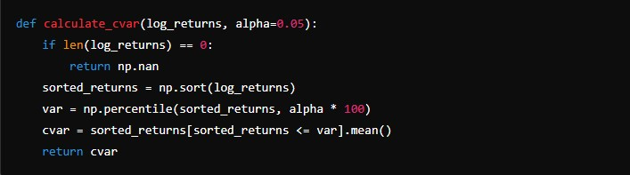

Portfolio manager with AI
Tools and Technologies used
- Python: Python was the primary programming language used to develop the backend of the web application. Its extensive libraries and frameworks made it an ideal choice for data analysis, machine learning, and web development.
- Keras and TensorFlow: Keras, a high-level neural networks API, was used alongside TensorFlow as the backend to create, train, and deploy the Long Short-Term Memory (LSTM) model for stock price prediction. The LSTM model was trained on historical stock prices to capture temporal dependencies and make accurate short-term predictions.
- HTML5: HTML5 was utilized to create the frontend of the web application. Dash, a Python framework for building web applications, leverages HTML5 to render the layout and visual components of the dashboard, providing an interactive user experience.
- Firebase: Firebase was used for user authentication and real-time database services. Firebase Authentication managed the user login and registration processes, ensuring secure access to the application. The Firebase Realtime Database stored user-specific data, such as portfolio information and transaction history, allowing seamless data retrieval and updates.
Theoretical Foundations
- Conditional Value at Risk (C-VaR).
- GARCH Model.
- Logarithmic Returns.
- Portfolio Returns.
- Garman-Klass Volatility.
- Fama-French Three-Factor Model.
- LSTM Neural Network.
- SARIMA Model.
- The use of this Theoretical in this project will be explained later.
What is the purpose of this web application?
"Empowering Users to Make Informed Stock Investment Decisions" that was my first thinking when i started this project
This web application is designed to provide users with a powerful tool for managing their stock portfolios. By offering comprehensive analysis, accurate predictions, and effective optimization strategies, it aims to help users make well-informed investment decisions. The application allows users to securely log in and access detailed information about their investments. It provides insights into historical performance, predicts future stock prices using advanced models, and assesses the risk of individual stocks and portfolios. Additionally, users can buy and sell stocks directly within the platform and receive personalized recommendations for optimizing their portfolios to maximize returns and minimize risk. Interactive graphs and clear explanations are provided to help users understand their investments and navigate the stock market with confidence.
it is important to note that all the money shown in the current application is fictitious.
Web Page main features
Sign in
Log in
Manage Portfolio funtionalitie
Predictions with Neural Network in the short-term
Predictions with SARIMA model in the long-medium-term
Buy and Sell stocks
Recomendations with optimization
Theoretical Foundations and Their Use in the Code
Conditional Value at Risk (C-VaR)
Conditional Value at Risk (C-VaR) measures the risk of extreme losses in a portfolio. It is the expected loss given that the loss has exceeded the Value at Risk (VaR) at a certain confidence level. C-VaR is useful for understanding the potential downside risk beyond the VaR threshold.
Source: https://www.researchgate.net/figure/Conditional-Value-at-Risk-CVaR-Formula-11_fig3_361832965
In the code, C-VaR is calculated for the stock returns and displayed as a measure of maximum expected loss over the selected time period. The C-VaR calculation is done using the calculate_cvar function, and the results are presented in the application's dashboard.
GARCH Model.
The Generalized Autoregressive Conditional Heteroskedasticity (GARCH) model is used to predict the volatility of stock returns. It models the variance of returns as a function of past variances and past squared returns, capturing volatility clustering observed in financial time series.
The GARCH model is used to predict the volatility of stock returns. This predicted volatility is then displayed as part of the stock information, helping users understand the risk associated with their investments.
Logarithmic Returns.
Logarithmic returns are used to measure the continuous compounding rate of return over a period. They are preferred in financial modeling due to their time-additive properties.
In the code, logarithmic returns are calculated for each stock and used as input features for the LSTM model and other calculations, such as C-VaR and portfolio optimization.

Portfolio Returns
Portfolio returns are calculated based on the weighted average returns of individual assets in the portfolio. In the code, portfolio returns are used to assess the overall performance of the user's investments. This is part of the portfolio information displayed in the dashboard.
Garman-Klass Volatility
The Garman-Klass estimator is used to estimate the volatility of stock prices based on high, low, opening, and closing prices. It provides a more accurate measure compared to simple standard deviation.
The Garman-Klass volatility is calculated and used to assess the risk of individual stocks.
Fama-French Three-Factor Model
The Fama-French model extends the Capital Asset Pricing Model (CAPM) by adding two factors to account for size and value effects. The three factors are market risk premium, size factor (SMB), and value factor (HML).
Fama-French model is not directly implemented, but the concepts of risk and return are incorporated into the portfolio optimization process.
LSTM Neural Network
Long Short-Term Memory (LSTM) networks are a type of Recurrent Neural Network (RNN) designed to capture long-term dependencies in sequential data. They are particularly effective for time series forecasting due to their ability to remember past information for long periods.
The LSTM model is used to make short-term predictions of stock prices, which are then displayed on the dashboard.
How the LSTM Model Works
The LSTM model in this code is designed to predict stock prices based on historical data and various technical indicators. Here is a detailed explanation of how it works:
Data Collection and Preprocessing:
Historical stock price data is collected using the yfinance library. Several technical indicators are calculated and added to the dataset: Simple Moving Averages (SMA), Relative Strength Index (RSI), and Moving Average Convergence Divergence (MACD). Logarithmic returns are also calculated.
Data Normalization:
The data is normalized using MinMaxScaler to ensure that all input features are scaled to a range between 0 and 1. This is important for the performance of the LSTM model.
Training Data Preparation:
The dataset is split into training and testing sets. The training set consists of 95% of the data. Training data is prepared by creating sequences of 60 days of historical data to predict the next day's stock price.
LSTM Model Creation and Training:
An LSTM model is created using the Keras library. It consists of two LSTM layers and two dense layers. The model is trained on the training data for one epoch.
Model Serialization:
The trained LSTM model and the scaler are saved to disk using Keras and joblib, respectively. This serialization allows for quick loading and usage of the model in the web application, improving performance and reducing the need for retraining.
SARIMA Model
The Seasonal Autoregressive Integrated Moving Average (SARIMA) model is used for time series forecasting, particularly for capturing seasonality and trends in the data. The model was tested using the Augmented Dickey-Fuller (ADF) test to ensure stationarity, and differencing was applied to achieve better results.
SARIMA model is used for medium and long-term predictions of stock prices. The SARIMA predictions provide insights into future trends and seasonality in stock prices.
Logarithmic Returns over multiple periods for Portfolio Performance
Logarithmic returns are used to measure the continuous compounding rate of return over multiple periods. They are particularly useful for evaluating the performance of the portfolio over time.
In the code, logarithmic returns are calculated to determine the portfolio's overall performance since the initial purchase. This is displayed on the dashboard to inform users about the gains or losses of their investments.
Future Implementations
We aim to implement a functionality that will teach personal finance using AI, providing users with personalized financial advice and educational content. Additionally, it is important to note that all the money shown in the current application is fictitious. We plan to implement a feature in the future that will allow users to add and manage real money within the application, enhancing its practicality and usefulness for personal financial management.